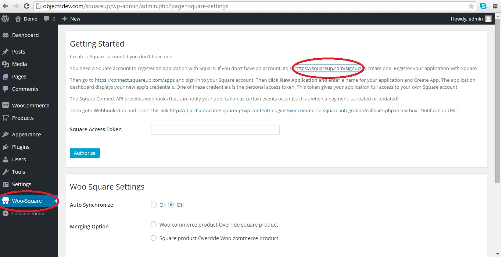
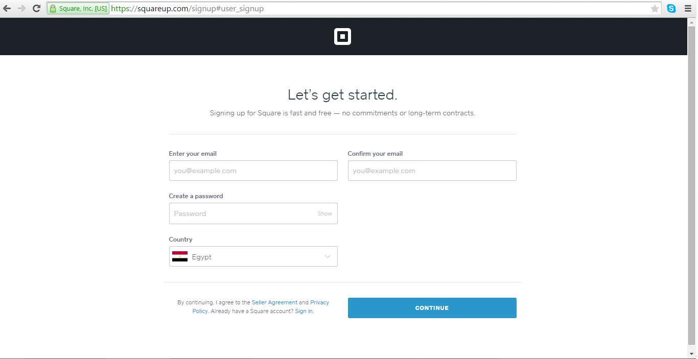
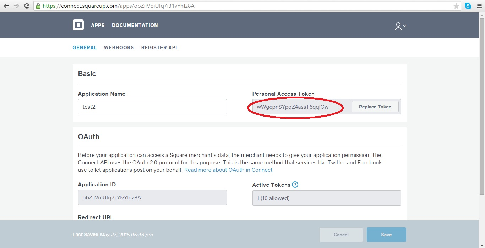
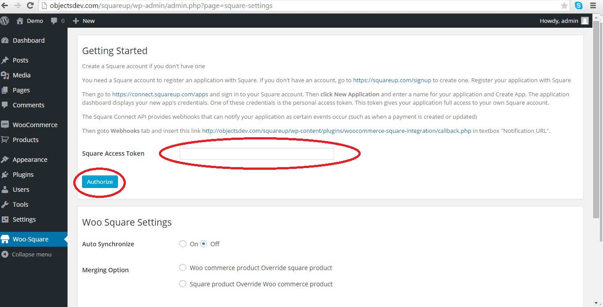
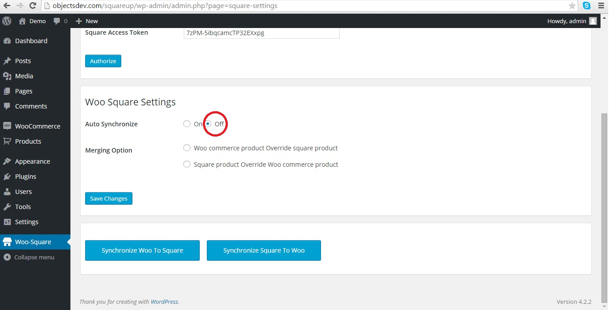
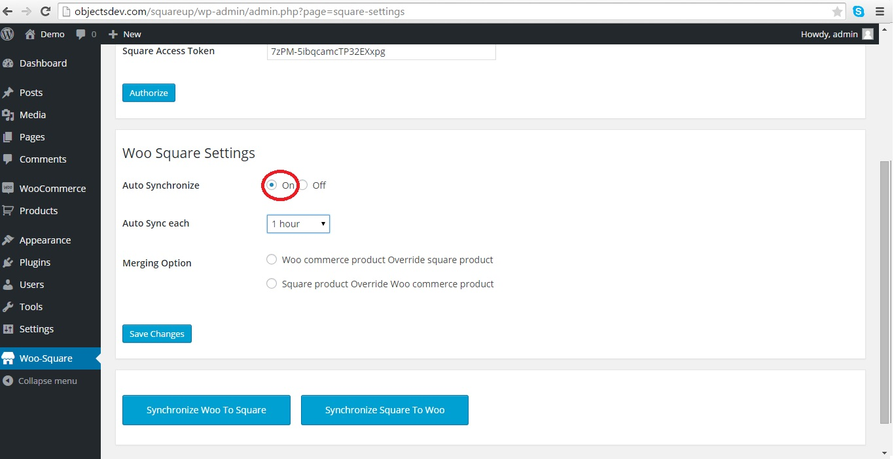
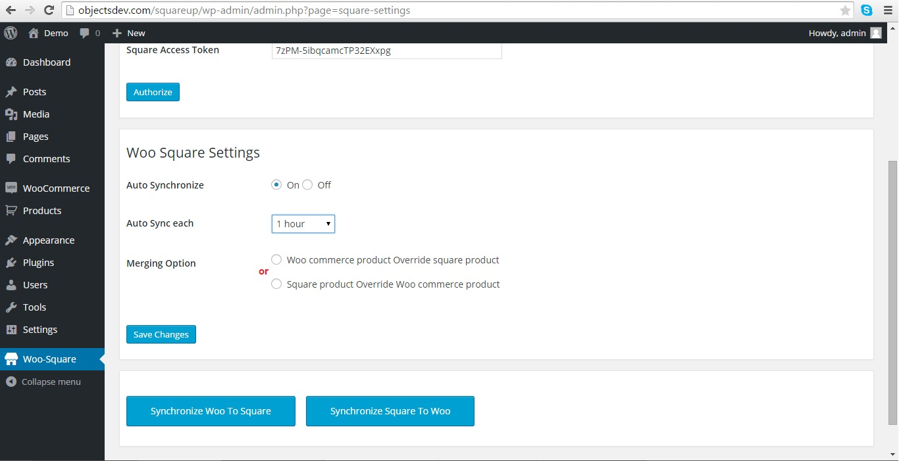
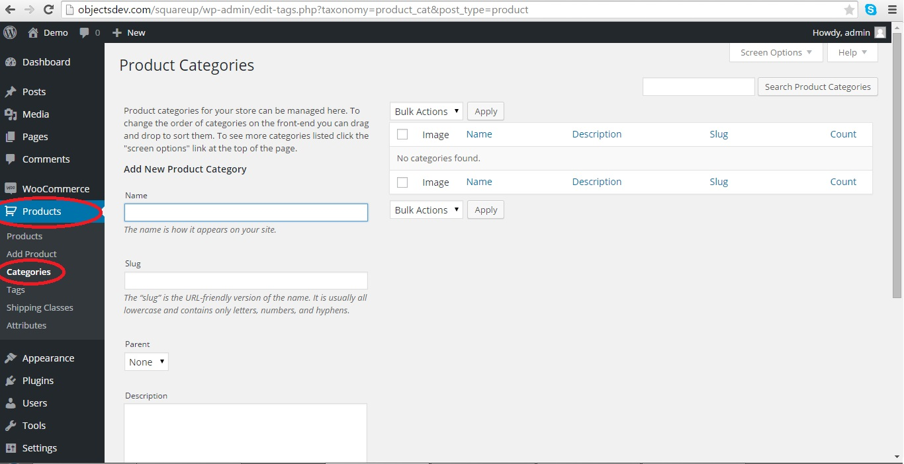

“WooCommerce - SquarePlugin”
Thank you for purchasing our plugin. If you have any questions that are beyond the scope of this help file, please feel free to email us here. Thanks so much!
Table of Contents
- Installation
- Features
- Configuration
- Woocommerce settings
- Manage products&orders
A) Installation - top
- Upload the plugin to wp-content/plugins.
- Activate the plugin from the Plugins menu.
B) Features - top
Products Management
- choose options of products synchronize(1-Woo commerce product Override square product or 2-Square product Override Woo commerce product
)
- Synchronize products categories-products-products variations,order total discounts,quantity,price between square and woo commerce
- synchronize returns between woocommerce and square
- Synchronize Customers created orders ,all orders details at square must be synchronized at woo commerce with products quantity deduction
C) Woocommerce settings - top
Go to woo-square and open the link " https://squareup.com/signup "
Connect square plugin with wordpress

- 1. Register at square to make new account

- 2.Connect your square account with wordpress, Go to the link https://connect.squareup.com/apps and add new application and get personal access token

- 3. Go to back-end woo-square and add personal access token

C) Manage woo-square settings - top
Go to woo-square

1-Syncronize manual
Select off if u want synchronize your data manually
2-Syncronize automatic
Select on if u want synchronize your data automatic and select time of syncronize data

3-Select type of data synchronize
select from 2 options woo commerce override square or vice versa

D)Manage products and orders - top
Go to Products

Go To Table of Contents